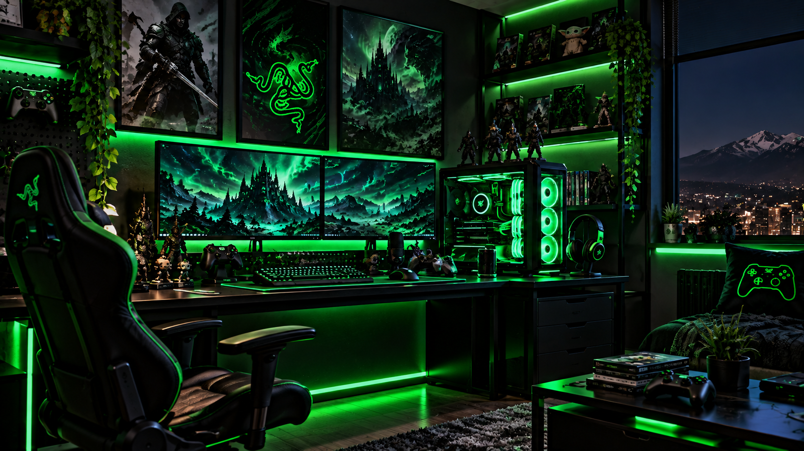

5 consejos para mejorar tu Setup Gamer

Tener un buen setup gamer no significa solamente contar con un computador potente. La comodidad, organización y distribución del espacio también son importantes para conseguir una mejor experiencia al jugar.
1. Organiza tu espacio
Mantener el escritorio ordenado permite aprovechar mejor el espacio disponible. Organizar los cables también ayuda a conseguir un ambiente más limpio y cómodo.
2. Utiliza una buena iluminación
Una iluminación adecuada puede mejorar la apariencia del setup y ayudar a reducir el cansancio visual durante largas sesiones frente al computador.
3. Elige periféricos cómodos
El teclado, mouse y audífonos son elementos que utilizamos constantemente. Es importante elegir productos cómodos y adecuados para nuestras necesidades.
4. Mantén una postura correcta
Una silla adecuada y una buena posición del monitor pueden ayudar a mantener una postura más cómoda mientras juegas o utilizas el computador.
5. Personaliza tu setup
Finalmente, puedes agregar iluminación, figuras, accesorios y otros elementos que representen tus juegos favoritos y hagan que tu espacio tenga un estilo propio.
Volver a Blogs